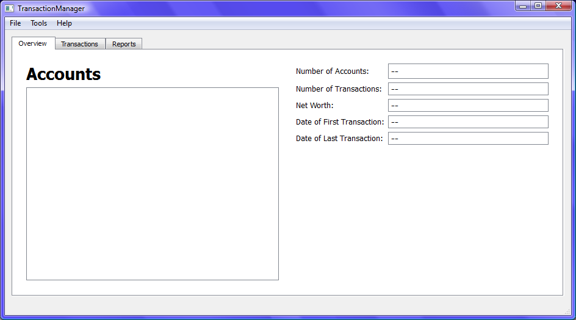

Transaction Manager Help Page
Table Of Contents
How To Use
Transaction File Config
Transaction Manager
The Transaction Manager is a Qt based application which aggregates, manages and displays
financial transactions contained in a data file.
It allows users to view the contents of a configurable data file containing account and
transaction information.

How To Use
Open Transaction Data File
- Click on the 'File' Menu
- Click on the 'Open' Menu Item

- Select Transaction data file to display transactions
- The file name of the transaction file being reviewed is displayed in the status bar

Transaction Manager Display
The Transaction Manager displays transaction data in 3 general tabs:
The Overview Tab

The Overview Tab displays a high level overview of the information
- An accounts list to display all the accounts found
- The Name, Current Balance, Status, Open and Close Date(if Closed) of each account found
- The Number of Accounts found
- The Number of Transactions found
- The combined current Net Worth of the accounts found
- The Date of the First and Last transactions
The Transactions Tab
The Transactions Tab displays the transactions in customizable list

- The Transaction list can sorted by any of the transaction values
- The Transaction selection tool box can be used to filter the transaction list
The Reports Tab
The Reports Tab displays the Report charts of data compiled from the transactions file

Transaction Data File Config
The Transaction Manager takes a text data file as input.
Default Input File Format
The default input data file is a csv (comma-separated-values) file.
'Input File Config' Dialog
The format of the input data file can be configured by the 'Input File Config' Dialog.
Click on the 'Tools' Menu
Click on the 'Input File Config' Menu Item

This opens the 'Input File Config' Dialog

Use the dropdown combo boxes to configure:
- The File Separator Character: ',' or ';'. Default: ','
- The Date Format used for Date Fields: Default: 'MM/dd/yy'
- The Account descriptor column order
- The Trnsaction descriptor column order